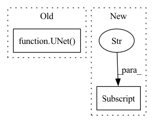

Pattern ID :9855

Before Change
n_timestep=opt["beta_schedule"]["n_timestep"],
linear_start=opt["beta_schedule"]["linear_start"],
linear_end=opt["beta_schedule"]["linear_end"])
model = UNet(
in_channel=opt["unet"]["in_channel"],
out_channel=opt["unet"]["out_channel"],
inner_channel=opt["unet"]["inner_channel"],
channel_mults=opt["unet"]["channel_multiplier"],
attn_res=opt["unet"]["attn_res"],
res_blocks=opt["unet"]["res_blocks"],
dropout=opt["unet"]["dropout"],
image_size=opt["diffusion"]["image_size"]
)
diffusion = GaussianDiffusion(
model,
image_size=opt["diffusion"]["image_size"],
channels=opt["diffusion"]["channels"],
After Change
def create_model(opt):
model = opt["model"]["which_model_G"]
if model == "DDPM":
from .DDPM import DDPM as M
In pattern: SUPERPATTERN
Frequency: 3
Non-data size: 2
Instances
Fragment ID: 35301082
Project Name: janspiry/image-super-resolution-via-iterative-refinement
Commit Name: 8cf57faeeacba0fa19bca1fb3ad4bb43f2fae2bb
Time: 2021-08-02
Author: lw_jiang@foxmail.com
File Name: model/__init__.py
M Class Name: AnonimousClass
N Class Name: AnonimousClass
M Method Name: create_model(1)
N Method Name: create_model(1)
M Parent Class:
N Parent Class:
M File Name: model/__init__.py
N File Name: model/__init__.py
M Start Line: 30
M End Line: 56
N Start Line: 6
N End Line: 14
'>
Before Change
n_timestep=opt["beta_schedule"]["n_timestep"],
linear_start=opt["beta_schedule"]["linear_start"],
linear_end=opt["beta_schedule"]["linear_end"])
model = UNet(
in_channel=opt["unet"]["in_channel"],
out_channel=opt["unet"]["out_channel"],
inner_channel=opt["unet"]["inner_channel"],
channel_mults=opt["unet"]["channel_multiplier"],
attn_res=opt["unet"]["attn_res"],
res_blocks=opt["unet"]["res_blocks"],
dropout=opt["unet"]["dropout"],
image_size=opt["diffusion"]["image_size"]
)
diffusion = GaussianDiffusion(
model,
image_size=opt["diffusion"]["image_size"],
channels=opt["diffusion"]["channels"],
After Change
def create_model(opt):
model = opt["model"]["which_model_G"]
if model == "DDPM":
from .DDPM import DDPM as M
else:
'>
Fragment ID: 35301083
Project Name: janspiry/image-super-resolution-via-iterative-refinement
Commit Name: 30eb13f9256050e6306a7defd0fc5bcefcd18496
Time: 2021-08-02
Author: jiangliangwei@tetras.com
File Name: model/__init__.py
M Class Name: AnonimousClass
N Class Name: AnonimousClass
M Method Name: create_model(1)
N Method Name: create_model(1)
M Parent Class:
N Parent Class:
M File Name: model/__init__.py
N File Name: model/__init__.py
M Start Line: 30
M End Line: 56
N Start Line: 6
N End Line: 14
'>
Before Change
"url": "https://www.dropbox.com/s/xgortm6ljd3dvhw/deepgrow_3d.pt?dl=1",
},
"segmentation_spleen": {
"network": UNet(
dimensions=3,
in_channels=1,
out_channels=2,
channels=(16, 32, 64, 128, 256),
strides=(2, 2, 2, 2),
num_res_units=2,
norm=Norm.BATCH,
),
"path": [
os.path.join(self.model_dir, "segmentation_spleen.pt"),
os.path.join(self.model_dir, "segmentation_spleen_final.pt"),
After Change
}
// Add deepgrow pipeline(s)
infers["deepgrow_pipeline"] = InferDeepgrowPipeline(
path=self.data["deepgrow_2d"]["path"],
network=self.data["deepgrow_2d"]["network"],
model_3d=infers["deepgrow_3d"],
'>
Fragment ID: 35301080
Project Name: project-monai/monailabel
Commit Name: b157ffa343e231c76f4fb96f8a1be028d1ce5387
Time: 2021-05-18
Author: sachidanand.alle@gmail.com
File Name: sample-apps/deepgrow/main.py
M Class Name: MyApp
N Class Name: MyApp
M Method Name: __init__(3)
N Method Name: __init__(3)
M Parent Class: MONAILabelApp
N Parent Class: MONAILabelApp
M File Name: sample-apps/deepgrow/main.py
N File Name: sample-apps/deepgrow/main.py
M Start Line: 16
M End Line: 47
N Start Line: 36
N End Line: 70